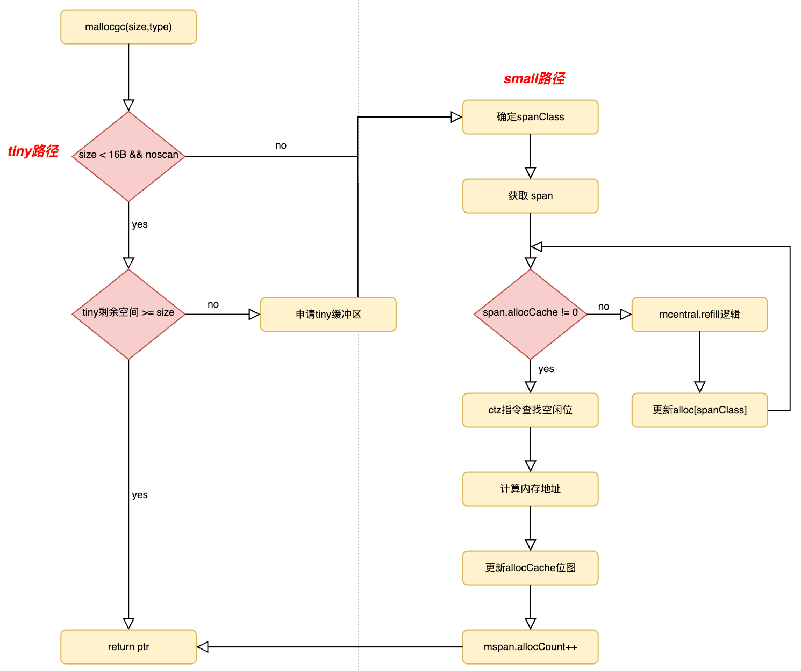

📄 本文共 763 字，预计阅读 2 分钟
06. 内存管理--mcache
1. 核心定位与设计
在 Go 内存管理的三级架构（mcache -> mcentral -> mheap）中，mcache 位于最顶层，直接服务于执行用户代码的 goroutine。尽管其概念源自 TCMalloc 的“线程本地缓存（Thread-Local Cache）”，但在 go 的 GMP 调度模型下，它被设计为 处理器本地缓存（P-Local Cache）。
- 定位：每个逻辑处理器（P）独有的本地内存缓存池。
- 职责：作为内存分配的第一级缓存，负责直接为 goroutine 分配 微对象（Tiny Objects） 和 小对象（Small Objects）。
-
设计哲学：
-
无锁分配 (Lock-Free)：鉴于
mcache绑定于 P，且同一时刻一个 P 仅执行一个 goroutine，访问mcache具有天然的线程安全性，无需加锁。这消除了高频小对象分配中的锁竞争开销。 -
空间局部性 (Data Locality)：goroutine 申请的内存直接来自当前运行它的 P 的本地缓存，这显著提高了 CPU 高速缓存（L1/L2 Cache）的命中率，减少了伪共享。
-
2. 核心数据结构解析
mcache 的结构设计高度紧凑，主要包含针对不同对象大小的两个核心分配器：微对象分配器与小对象分配器。
type mcache struct {
// 1. 微对象分配器 (Tiny Allocator) 字段
// 用于 < 16B 且不含指针(noscan) 的极小对象分配
tiny uintptr // 指向当前 tiny block 的起始地址
tinyoffset uintptr // 当前 tiny block 已使用的偏移量
local_tinyallocs uintptr // 统计信息：tiny 对象分配次数
// 2. 小对象分配器 (Small Object Allocator) 字段
// 核心：对应 68 种规格(spanClass) 的当前可用 mspan 数组
// numSpanClasses = 136 (68 * 2，包含 scan 和 noscan)
alloc [numSpanClasses]*mspan
// 3. 采样与统计
nextSample uintptr // 下一次触发堆分析(Heap Profile)的阈值
// ... 其他字段
}
2.1 关键组件详解
-
alloc数组： 这是mcache的主体。它是一个包含 136 个*mspan指针的数组。-
职责：数组的每个槽位
alloc[i]都持有一个特定规格（spanClass）的mspan，作为当前该规格对象的直接来源。 -
工作流：当需要分配内存时，根据对象大小计算出
class，直接去alloc[class]拿空闲槽位。 tiny系列字段： 这是 go 对极小对象（如bool,int,byte）的特殊优化。为了避免 1 字节变量也占用 8 字节（最小 class）的浪费，将它们“拼凑”在一个 16 字节的内存块中。
-
2.2 mcache 内部架构图
 图1：mcache内部架构
图1：mcache内部架构
3. 核心机制：极速分配的两条路径
mcache 的高效得益于针对不同大小对象的差异化处理策略。
3.1 tiny 分配机制
适用场景：size < 16B && noscan (不含指针)。
这是一种指针碰撞风格的分配器。
-
流程：
-
判断当前持有的 tiny 块（大小通常为 16B）的剩余空间 (
16B - tinyoffset) 是否满足申请需求。 -
直接分配：若充足，通过简单的指针偏移 (
tinyoffset + size) 完成分配，返回地址。 -
缓冲区替换：若不足，则通过 Small 分配路径 申请一个新的 16B 内存块（通常来自
spanClass2），替换旧的 tiny 块。旧块中未使用的剩余空间将作为内部碎片被消耗，但因总量极小，成本可控。
-
-
收益：将多个微对象合并至同一缓存行，极大提升了内存利用率和访问性能。
3.2 small分配机制
适用场景：16B <= size <= 32KB 或 size < 16B 但含指针。
-
Fast Path (本地命中)：
-
计算规格：根据
size查表得到spanClass。 -
定位span：找到
mcache.alloc[spanClass]指向的当前mspan。 -
查找空位：利用
mspan.allocCache（缓存的位图）快速找到下一个空闲槽位（nextFree）。注：Go 使用 ctz (Count Trailing Zeros) 指令在 CPU 周期级完成位图查找。 -
标记与返回：更新位图，返回对象地址。
-
-
Slow Path (refill)： 当
mcache在某个spanClass上无法再从当前 span 获取空位时，会进入refill 流程：-
归还：将这个满的 span 归还给
mcentral（可能触发full -> partial的流转）。 -
填充：调用
mcache.refill()，从mcentral申请一个新的非满 span 。 -
替换：将新 span 挂载到
alloc[spanClass]，重试 Fast Path。
-
3.3 mcache申请内存流程图
 图2：mcache申请内存流程
{kind=link}
⚠️： 当 tiny 缓冲区剩余空间不足以容纳当前对象时，会触发缓冲区扩容逻辑。该逻辑本质上是复用 Small 分配路径申请一个 16B 的内存块，将其替换为新的 tiny 缓冲区，随后再基于该新缓冲区完成本次内存分配。
4. 同mcentral、mheap交互
尽管 mcache 是本地缓存，但它通过资源流转机制保持与全局内存池的动态平衡。
4.1 与 mcentral 的交互
-
refill（填充）：当
mcache缺货时，它是消费者。它拿着空的alloc槽位向mcentral索要子弹。这是前面文档提到的mcentral查找partial列表的过程 。 -
flush（归还）：当 P 被剥离（如
GOMAXPROCS调小）或垃圾回收开始时，mcache会被清空。它持有的所有 span（无论满没满）都会被退还给mcentral，供其他 P 使用。这保证了资源不会死锁在休眠的 P 身上。
4.2 与 mheap 的交互
对于 size > 32KB 的大对象，mcache 会被直接绕过。请求直接发往 mheap 进行页分配 。mcache 仅仅在统计数据（如 local_largefree）上做个记录，不持有大对象的 span。
5. 总结
mcache 是 go 内存分配器实现高并发的根本保证。它把绝大多数小对象分配变成 per-P 的本地操作，显著降低锁竞争与跨核抖动；同时通过与 mcentral 的 refill/flush 机制维持“局部快速”与“全局复用”的平衡；并通过 tiny allocator 在满足约束的前提下进一步减少小对象碎片。